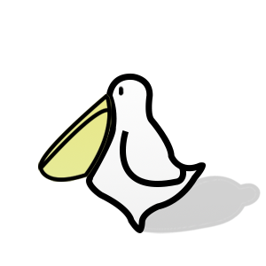

{% extends "diet/layout.html" %} {% block content %} {% load static %}

<div class="main-container">
  <div class="chat-friends">
    <div class="chat-friends__image">
    </div>
  </div>
  <div class="chat-container">
    <div class="block">
      <span class="chat-friends__intro">시니컬하지만 밉지 않은 챗봇 코치<br><span class="dayo">다요프렌즈</span>를 만나보세요!</span>
      <a class="chat-friends__button" href="/howto">사용방법</a>
    </div>
    <div class="chat-body__container">
      <div class="chat-body">
        <iframe allow="microphone;" width="500" height="550" src="https://console.dialogflow.com/api-client/demo/embedded/32f6dbc4-69c0-446d-8959-9272a572d157">
        </iframe>
      </div>
      <div class="chat-rightwing">
        <div class="chat-leftwing">
        </div>
      </div>
    </div>
  </div>
  {% endblock %}